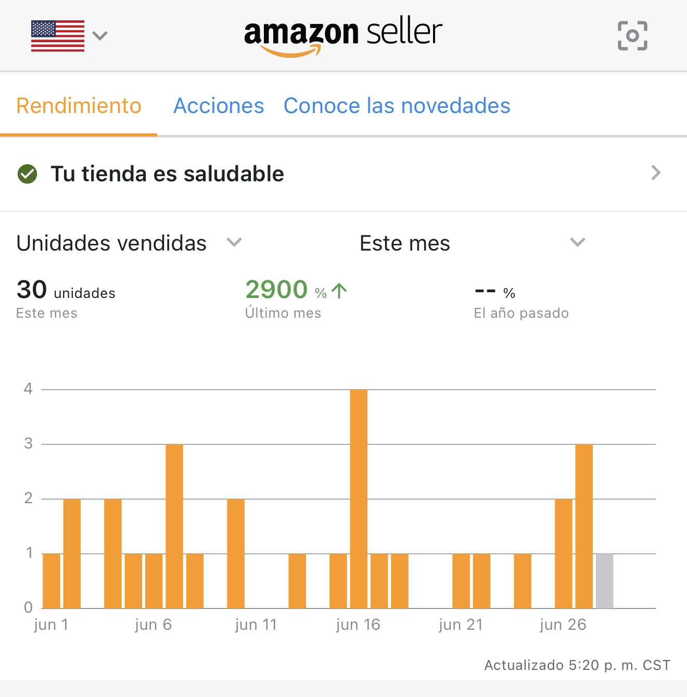

Cómo lancé una marca de e-commerce en Amazon desde cero, con menos de 5 horas semanales, un equipo remoto y el mismo sistema operativo que uso con mis clientes.
El contexto
Llevo 20 años transformando operaciones en empresas. Pero hay algo que siempre digo a mis clientes: el sistema tiene que funcionar en la realidad, no solo en el papel.
Hace 6 meses arranqué el lanzamiento de una marca privada en Amazon USA — un producto en un nicho deportivo de alta barrera de entrada, con competencia analizada, proveedor en China negociado directamente y un VA en Pakistán como único colaborador.
La restricción era real: menos de 5 horas semanales disponibles. El resto de mi tiempo lo ocupan mi trabajo corporativo, mis mentorías y mis otras operaciones. Sin sistema, eso es imposible. Con sistema, es exactamente lo que mostraré en este caso.
La línea de tiempo
Análisis de mercado con Helium 10: nichos con alta barrera de entrada, competencia medible, diferenciador claro. Negociación directa con proveedor en China. Sin producto correcto, no hay sistema que salve el lanzamiento.
Coordinación de producción, control de calidad, envío a almacén de Amazon USA. El VA gestiona toda la logística. Yo reviso los puntos de decisión críticos, no el proceso completo.
Listing activo con fotos optimizadas, descripción con keywords estratégicas y campañas de PPC iniciales. Primer día sin ventas — esperado.
No fue al azar. Fue el resultado de la estructura previa: producto con demanda real, listing con conversión optimizada y campañas bien segmentadas.
Revisión de campañas PPC, optimización de fotos, inicio del proceso de marca registrada en Amazon Brand Registry. 29 unidades en el primer mes completo. +2,800% vs el mes anterior.
El framework en acción
El mismo modelo que aplico con mis clientes, ejecutado en mi propio negocio. No como teoría — como operación real.
Los indicadores
No se gestiona lo que no se mide. Estos son los KPIs que reviso cada dos semanas para tomar decisiones de PPC, inventario y posicionamiento.
La evidencia
Datos reales del primer mes completo en Amazon — captura directa del panel de Amazon Seller Central. Las cifras de ingresos se omiten por confidencialidad.

Resultados
No es un resultado extraordinario — es un resultado consistente. Eso es exactamente lo que busca el sistema: ventas predecibles, no golpes de suerte.
El sistema no me hace el trabajo. Me permite enfocarme solo en las decisiones que yo debo tomar — y dejar el resto al proceso.
Fer Balcázar · Fundador · The CAP Lead
El sistema que apliqué aquí es el mismo que trabajo con mis clientes. Empieza con un diagnóstico de 45 minutos sin costo — y sal con un plan de acción concreto.
Agenda tu sesión gratuita